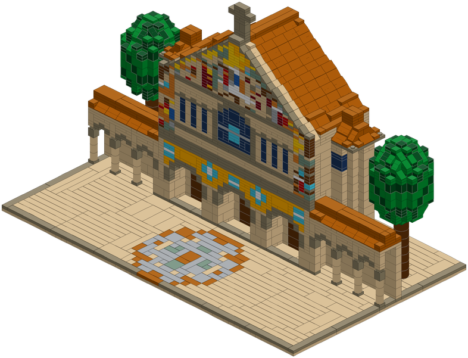
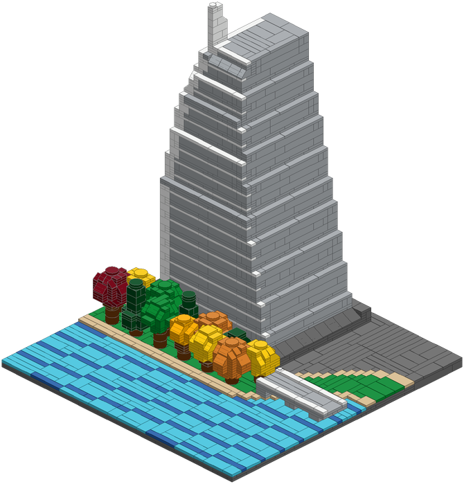
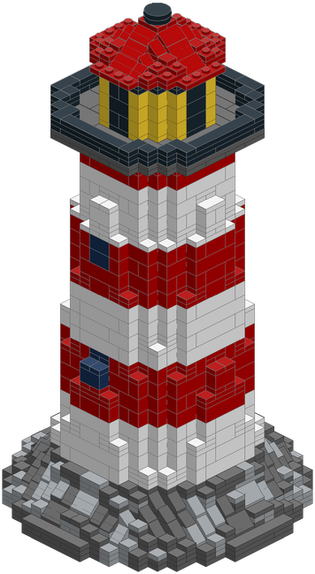
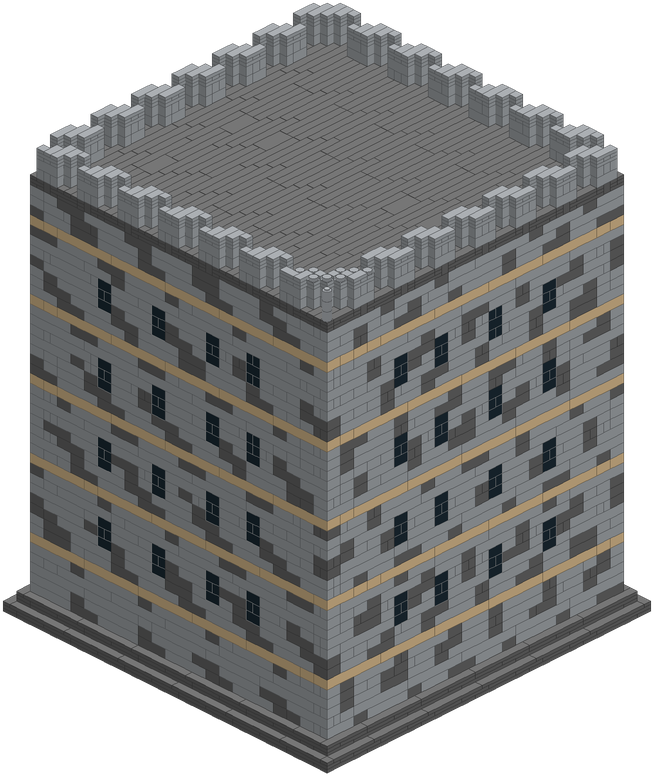
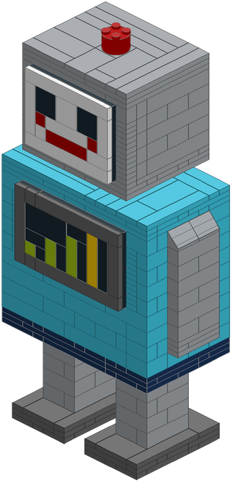
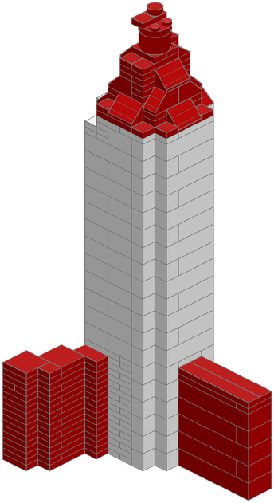

Memorial Church
Stanford's Memorial Church from the Main Quad. The gable mosaic is built from plate edges: every pixel is a stud wide and a plate tall.
Open in 3DBrick models designed with Snapwright, an open-source Claude skill. Each one is checked in software: every part connects, nothing floats, it stands up, and every part comes in the colour it asks for. Everything here is free to download.

Stanford's Memorial Church from the Main Quad. The gable mosaic is built from plate edges: every pixel is a stud wide and a plate tall.
Open in 3D



